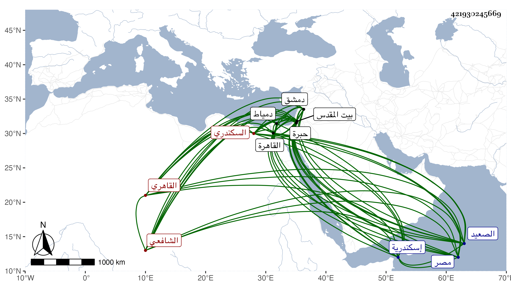

0902Sakhawi.DawLamic.ITO20230111-ara1.EIS1600.421930245669
Biography ID: 421930245669
570
علي بن أحمد بن خليل بن ناصر بن علي بن طيء نور الدين السكندري الأصل القاهري الشافعي ويعرف أولا بابن السقطي بمهملتين بينهما قاف مفتوحة ثم بابن البصال بموحدة ومهملة ثقيلة . ولد في المحرم سنة ثلاث وسبعين وسبعمائة بحارة بهاء الدين من القاهرة وحفظ القرآن والتبريزي في الفقه والملحة وقال أنه عرضهما على المجد اللغوي وابن الملقن والأبناسي والبرهان ابن جماعة القاضي وأنه اشتغل بالفقه على البهاء أبي الفتح البلقيني والشهاب الحسيني والبيجوري وأنه حضر دروس البلقيني وفي النحو عند الشمسين البرماوي وابن الديري وسمع في رمضان سنة تسع وثمانين على النجم بن رزين صحيح البخاري وكذا سمعه خلا من أوله إلى الصيام على البلقيني وبعض مسلم على الصلاح البلبيسي وسمع أيضا على ابن الشيخة وابن الملقن وكتب كثيرا من تصانيفه وجلس مع الشهود وتعانى التوقيع ووقع في الإنشاء وفي بيوت الأمراء ، وحج في سنة ست وثلاثين وسافر إلى دمشق فما دونها وزار القدس والخليل ودخل إسكندرية ودمياط وطوف بلاد الصعيد وربما نظم وفي نظمه ما يضحك كقوله في سقوط منارة المؤيدية :
| بني سلطاننا المؤيد جامعا | حوى حسنا وبهجة رونق |
| سما بها على كل جامع بمصر | له منارة قد بنيت على برج عتيق |
| مالت من ثقل أحجار بها على | سفل يقول بلسان الحال ناطقة |
| تمهلوا على ضعفي فما ضرني | سوى ذلك البرج |
ولذا تلاعب به الشهاب الحجازي حيث قرضه له بما هو في ديوانه وجرت له كائنة مع الظاهر جقمق بعد تقدم صحبته له وحدث باليسير أجاز لي لفظا . ومات في رجب سنة سبع وأربعين بالقاهرة وهو ممن أورده شيخنا في إنبائه رحمه الله وإيانا .
